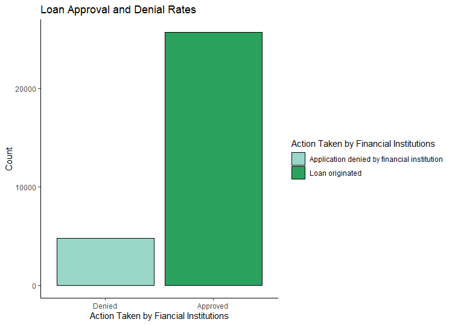
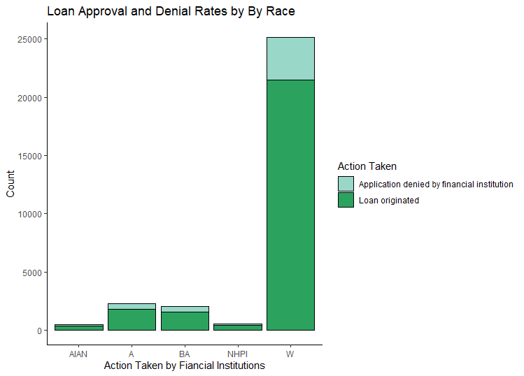
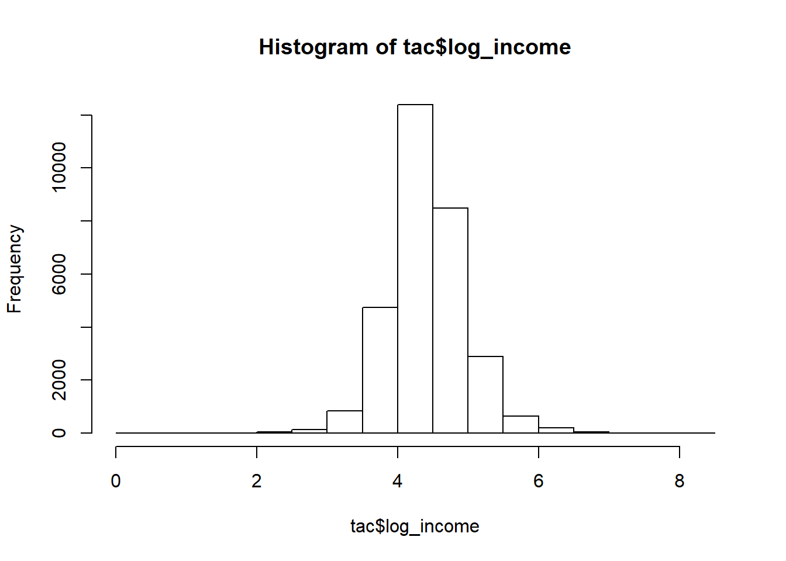
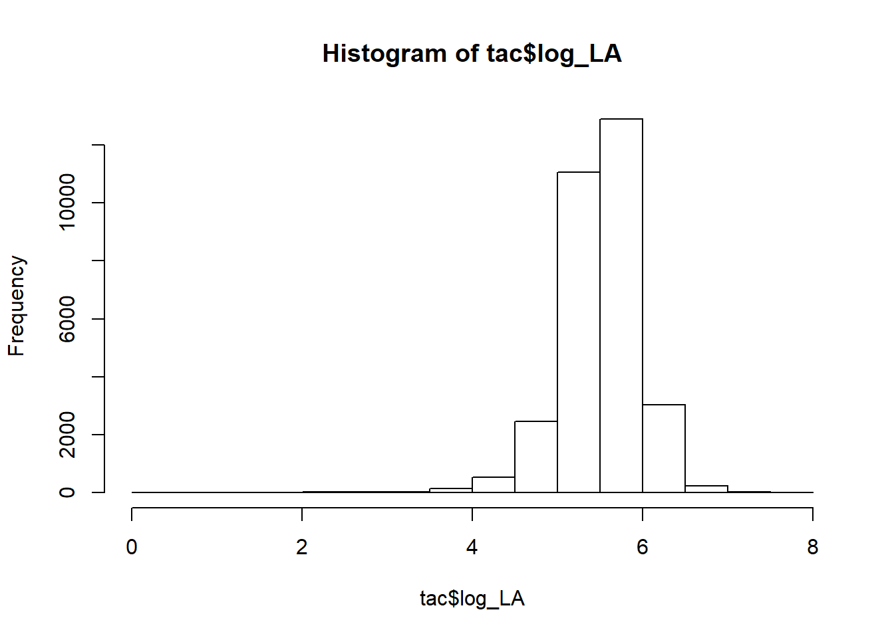

In the recent past, minorities in Tacoma, Washington were denied access to home loans based on where they lived. This practice is known as redlining because property assessors would create maps with minority communities outlined in red. The red outline told bankers minority communities were not fit for loans. The consequence of redlining was a significant disparity in mortgage loans and homeownership rates between white communities and minority communities.
Today, banks don’t practice redlining, but disparities in mortgage loans and homeownership still exist at a significant rate. For example, the average homeownership rate in the West Census Region is 59.3 %. However, the average homeownership rate for minorities (47.9 %) is 11.4 points below the West Census Region’s average and 25.2 points below their white peers (73.1 %).
Homeownership is an effective wealth generating tool. According to a study conducted by the Demos organization, if disparites in homeownership rates were closed; the wealth gap between white and black families decreased by 31 %. Because of these circumstances, an analysis of home mortgage data to discover patterns in loan approval / denial rates in the Tacoma-Lakewwood area is warranted.
Analysis began by gathering data from the Consumer Financial Protection Bureau (CFPB). The CFPB provides access to loan-level data so that trends in mortgage applications can be monitored. Action taken on loan applications, HUD median income, loan amount, appliancts income, race and ethnicity, gender, loan type and purpose are some of the variables that are included in the dataset from the CFPB. For this analyses, the mortgage dataset included 30,451 observations for the Tacoma-Lakewood area, of which 85 % of the applicants were approved for mortgages.
To guide the modeling approach, the process began with the assumption that minority approval rates are lower than non-minorites when controlling for loan amount,income and other factors. This hypothesis was based on trends in homeownership rates. Furthermore, logistic regression was used to generate the odds of approval for a mortgage loan based on race.
Exploratory analysis was used to understand what factors are related to different statuses on action taken by the financial institution (loan originated or loan denied).
Applicant_sex,applicant_race, and action_taken were used to conduct a series chi-square test to determine if any significant differences in loan status existed. The full tables and the results of the significance test are included in the Appendix here. As an example, test were conducted a to determine whether the loan approvals and denials for minorities were significantly different from non-minoirties. Figure 1 shows the overall approval and denial rates for mortgage loans, of which roughly 85 % were approved and 15 % denied.

After observing the overall breakdown of loan approvals and denials, the analysis focused on the distribution of loan approvals and denials across race. The chi-square results indicated a significant relationship between between race and action taken by financial institution. The tables in the appendix show that minorites have an average approval probability for loan approval of 79%, which is roughly 6 points lower than non-minorities. In terms of an odds ratio, non-minorities have a 5.91 to 1 chance of receiving approval; and minorities have 3.79 to 1 chance of receiving approval, which is 64 % less than non-minorities.

The data wrangling process began by checking for errors, missing data, outliers, and testing assumptions. The table function in R was used to examine categorical variables for miscoded data and mislabeled categories. Fortunately, there were no issues with categorical variables. Next, the summary function identified which continuous variables had missing values. The variable applicant_income_000s had 1306 missing values. To solve this problem, an imputation function imputed values to the missing data. Once that problem was solved, graphical analysis and test of normality indicated that the variables applicant_income_000s and loan_amount_000s had to be transformed to reduce skewness. The log transformation succesfully completed this task. And lastly, categorical variables were converted to binary variables.
Often, models are used to understand how an independent variable affects a dependent variable. In this situation, logistic regression was used to determine if the odds for loan approval was different for non-minorities and minorities when income and loan amount are equal.
The logistic regression revealed that minorites have a lower odds for approval than non-minorities when seeking a morthage loan. For example, when controlling for average income and average loan amount, a white person’s odds for loan approval is 5.93 to 1; and a black person’s odds are 3.75 to 1. These results are analogous to the results obtained from the contingency tables mentioned in the exploratory analysis section. The formula used to derive the odds ratios from the logistic regression is provide in the appendix
##
## American Indian or Alaska Native
## Application denied by financial institution 97
## Loan originated 384
##
## Asian
## Application denied by financial institution 470
## Loan originated 1822
##
## Black or African American
## Application denied by financial institution 468
## Loan originated 1568
##
## Native Hawaiian or Other Pacific Islander
## Application denied by financial institution 103
## Loan originated 411
##
## White
## Application denied by financial institution 3634
## Loan originated 21501##
## American Indian or Alaska Native
## Application denied by financial institution 97
## Loan originated 384
##
## Asian
## Application denied by financial institution 470
## Loan originated 1822
##
## Black or African American
## Application denied by financial institution 468
## Loan originated 1568
##
## Native Hawaiian or Other Pacific Islander
## Application denied by financial institution 103
## Loan originated 411
##
## White
## Application denied by financial institution 3634
## Loan originated 21501## Application denied by financial institution
## 4772
## Loan originated
## 25686## American Indian or Alaska Native
## 481
## Asian
## 2292
## Black or African American
## 2036
## Native Hawaiian or Other Pacific Islander
## 514
## White
## 25135##
## American Indian or Alaska Native
## Application denied by financial institution 0.3184713
## Loan originated 1.2607525
##
## Asian
## Application denied by financial institution 1.5431085
## Loan originated 5.9820080
##
## Black or African American
## Application denied by financial institution 1.5365421
## Loan originated 5.1480728
##
## Native Hawaiian or Other Pacific Islander
## Application denied by financial institution 0.3381706
## Loan originated 1.3493992
##
## White
## Application denied by financial institution 11.9311839
## Loan originated 70.5922910##
## American Indian or Alaska Native
## Application denied by financial institution 20.16632
## Loan originated 79.83368
##
## Asian
## Application denied by financial institution 20.50611
## Loan originated 79.49389
##
## Black or African American
## Application denied by financial institution 22.98625
## Loan originated 77.01375
##
## Native Hawaiian or Other Pacific Islander
## Application denied by financial institution 20.03891
## Loan originated 79.96109
##
## White
## Application denied by financial institution 14.45793
## Loan originated 85.54207##
## American Indian or Alaska Native
## Application denied by financial institution 20.16632
## Loan originated 79.83368
##
## Asian
## Application denied by financial institution 20.50611
## Loan originated 79.49389
##
## Black or African American
## Application denied by financial institution 22.98625
## Loan originated 77.01375
##
## Native Hawaiian or Other Pacific Islander
## Application denied by financial institution 20.03891
## Loan originated 79.96109
##
## White
## Application denied by financial institution 14.45793
## Loan originated 85.54207The chi squared test was used to determine if their is a significant relationship between race and loan action taken by financial institutions.
##
## Pearson's Chi-squared test
##
## data: tac$action_taken_name and tac$applicant_race_name_1
## X-squared = 165.79, df = 4, p-value < 2.2e-16tac<-read.csv("Tacoma.csv",header = T)
library(MASS)
library(caret)
library(car)
library(ggplot2)
library(dplyr)
library(pastecs)
library(psych)
library(QuantPsyc)tac$missing_inc<-ifelse(is.na(tac$applicant_income_000s),
"Y","N")
names(tac)## [1] "tract_to_msamd_income" "rate_spread"
## [3] "population" "minority_population"
## [5] "number_of_owner_occupied_units" "number_of_1_to_4_family_units"
## [7] "loan_amount_000s" "hud_median_family_income"
## [9] "applicant_income_000s" "state_name"
## [11] "state_abbr" "sequence_number"
## [13] "respondent_id" "purchaser_type_name"
## [15] "property_type_name" "preapproval_name"
## [17] "owner_occupancy_name" "msamd_name"
## [19] "loan_type_name" "loan_purpose_name"
## [21] "lien_status_name" "hoepa_status_name"
## [23] "edit_status_name" "denial_reason_name_3"
## [25] "denial_reason_name_2" "denial_reason_name_1"
## [27] "county_name" "co_applicant_sex_name"
## [29] "co_applicant_race_name_5" "co_applicant_race_name_4"
## [31] "co_applicant_race_name_3" "co_applicant_race_name_2"
## [33] "co_applicant_race_name_1" "co_applicant_ethnicity_name"
## [35] "census_tract_number" "as_of_year"
## [37] "application_date_indicator" "applicant_sex_name"
## [39] "applicant_race_name_5" "applicant_race_name_4"
## [41] "applicant_race_name_3" "applicant_race_name_2"
## [43] "applicant_race_name_1" "applicant_ethnicity_name"
## [45] "agency_name" "agency_abbr"
## [47] "action_taken_name" "missing_inc"features_1<- c("tract_to_msamd_income","population","minority_population",
"loan_amount_000s","applicant_income_000s","applicant_race_name_1",
"applicant_sex_name", "action_taken_name")
tac<-tac[,features_1]
dummy_vars<- dummyVars(~., data = tac[,-8])
tac_dummy<- predict(dummy_vars,tac[,-8])
View(tac_dummy)
names(tac_dummy)## NULLpre_process<- preProcess(tac_dummy, method = "medianImpute")
imputed_data<-predict(pre_process,tac_dummy)
View(imputed_data)
tac$applicant_income_000s<- imputed_data[,5]
summary(tac$applicant_income_000s)## Min. 1st Qu. Median Mean 3rd Qu. Max.
## 1.00 60.00 82.00 98.53 113.00 3182.00tac<- mutate(tac, log_income = log(applicant_income_000s) )
tac<- mutate(tac, log_LA = log(loan_amount_000s) )
summary(tac$log_LA)## Min. 1st Qu. Median Mean 3rd Qu. Max.
## 0.000 5.273 5.525 5.504 5.771 7.908summary(tac$log_income)## Min. 1st Qu. Median Mean 3rd Qu. Max.
## 0.000 4.094 4.407 4.429 4.727 8.065describe(tac$log_income)## vars n mean sd median trimmed mad min max range skew kurtosis
## X1 1 30458 4.43 0.54 4.41 4.42 0.46 0 8.07 8.07 0.15 3.23
## se
## X1 0hist(tac$log_income)
describe(tac$log_LA)## vars n mean sd median trimmed mad min max range skew kurtosis
## X1 1 30458 5.5 0.46 5.53 5.52 0.37 0 7.91 7.91 -0.92 5.76
## se
## X1 0hist(tac$log_LA)
tac$BA[tac$applicant_race_name_1=="Black or African American"]="1"
tac$BA[tac$applicant_race_name_1=="American Indian or Alaska Native"]="0"
tac$BA[tac$applicant_race_name_1=="White"]="0"
tac$BA[tac$applicant_race_name_1=="Asian"]= "0"
tac$BA[tac$applicant_race_name_1 == "Native Hawaiian or Other Pacific Islander"]= "0"
tac$Loan_Status[tac$action_taken_name=="Application denied by financial institution"]="0"
tac$Loan_Status[tac$action_taken_name=="Loan originated"]="1"
View(tac)
tac<-mutate(tac, Female = ifelse(applicant_sex_name =="Female",1,0))
tac<-mutate(tac, AIAN = ifelse(applicant_race_name_1=="American Indian or Alaska Native",1,0))
tac<-mutate(tac, Asian = ifelse(applicant_race_name_1=="Asian",1,0))
tac<-mutate(tac, NHPI = ifelse(applicant_race_name_1=="Native Hawaiian or Other Pacific Islander",1,0))
tac$Loan_Status<- as.factor(tac$Loan_Status)
tac$BA<-as.factor(tac$BA)
tac$Female<-as.factor(tac$Female)
tac$AIAN<-as.factor(tac$AIAN)
tac$Asian<-as.factor(tac$Asian)
tac$NHPI<-as.factor(tac$NHPI)
str(tac)## 'data.frame': 30458 obs. of 16 variables:
## $ tract_to_msamd_income: num 123.2 177.3 93.2 80.5 177.3 ...
## $ population : int 5107 4357 6765 5121 4357 4357 5477 4357 3755 4361 ...
## $ minority_population : num 7.03 29.31 20.38 18.24 29.31 ...
## $ loan_amount_000s : int 392 408 263 242 393 592 200 209 259 151 ...
## $ applicant_income_000s: num 69 112 140 85 167 106 109 26 70 92 ...
## $ applicant_race_name_1: Factor w/ 5 levels "American Indian or Alaska Native",..: 5 5 5 5 5 5 2 5 5 5 ...
## $ applicant_sex_name : Factor w/ 2 levels "Female","Male": 2 2 2 1 2 2 2 2 2 2 ...
## $ action_taken_name : Factor w/ 2 levels "Application denied by financial institution",..: 2 1 2 2 2 1 2 1 2 2 ...
## $ log_income : num 4.23 4.72 4.94 4.44 5.12 ...
## $ log_LA : num 5.97 6.01 5.57 5.49 5.97 ...
## $ BA : Factor w/ 2 levels "0","1": 1 1 1 1 1 1 1 1 1 1 ...
## $ Loan_Status : Factor w/ 2 levels "0","1": 2 1 2 2 2 1 2 1 2 2 ...
## $ Female : Factor w/ 2 levels "0","1": 1 1 1 2 1 1 1 1 1 1 ...
## $ AIAN : Factor w/ 2 levels "0","1": 1 1 1 1 1 1 1 1 1 1 ...
## $ Asian : Factor w/ 2 levels "0","1": 1 1 1 1 1 1 2 1 1 1 ...
## $ NHPI : Factor w/ 2 levels "0","1": 1 1 1 1 1 1 1 1 1 1 ...table(tac$action_taken_name,tac$applicant_race_name_1)##
## American Indian or Alaska Native
## Application denied by financial institution 97
## Loan originated 384
##
## Asian
## Application denied by financial institution 470
## Loan originated 1822
##
## Black or African American
## Application denied by financial institution 468
## Loan originated 1568
##
## Native Hawaiian or Other Pacific Islander
## Application denied by financial institution 103
## Loan originated 411
##
## White
## Application denied by financial institution 3634
## Loan originated 21501table(tac$Female)##
## 0 1
## 21485 8973names(tac)## [1] "tract_to_msamd_income" "population"
## [3] "minority_population" "loan_amount_000s"
## [5] "applicant_income_000s" "applicant_race_name_1"
## [7] "applicant_sex_name" "action_taken_name"
## [9] "log_income" "log_LA"
## [11] "BA" "Loan_Status"
## [13] "Female" "AIAN"
## [15] "Asian" "NHPI"tac<- tac[,c(1,2,3,9,10,11,12,13,14,15,16)]
View(tac)set.seed(327)
index <- createDataPartition(tac$Loan_Status, p = 0.7, list = FALSE)
train<-tac[index,]
test<-tac[-index,]
train_control<- trainControl(method = "repeatedcv",
number = 10,
repeats = 10,
verboseIter = FALSE,
sampling = "smote")model1<-glm(Loan_Status~ log_income+log_LA+BA+Female+AIAN+Asian,data = train,
family ="binomial")
summary(model1)##
## Call:
## glm(formula = Loan_Status ~ log_income + log_LA + BA + Female +
## AIAN + Asian, family = "binomial", data = train)
##
## Deviance Residuals:
## Min 1Q Median 3Q Max
## -2.9859 0.4537 0.5418 0.6134 1.5090
##
## Coefficients:
## Estimate Std. Error z value Pr(>|z|)
## (Intercept) -2.40519 0.23845 -10.087 < 2e-16 ***
## log_income 0.54953 0.04108 13.377 < 2e-16 ***
## log_LA 0.31827 0.04618 6.892 5.50e-12 ***
## BA1 -0.45300 0.06856 -6.608 3.91e-11 ***
## Female1 0.07212 0.04204 1.716 0.0862 .
## AIAN1 -0.35103 0.13944 -2.517 0.0118 *
## Asian1 -0.34759 0.06705 -5.184 2.17e-07 ***
## ---
## Signif. codes: 0 '***' 0.001 '**' 0.01 '*' 0.05 '.' 0.1 ' ' 1
##
## (Dispersion parameter for binomial family taken to be 1)
##
## Null deviance: 18514 on 21321 degrees of freedom
## Residual deviance: 18041 on 21315 degrees of freedom
## AIC: 18055
##
## Number of Fisher Scoring iterations: 4